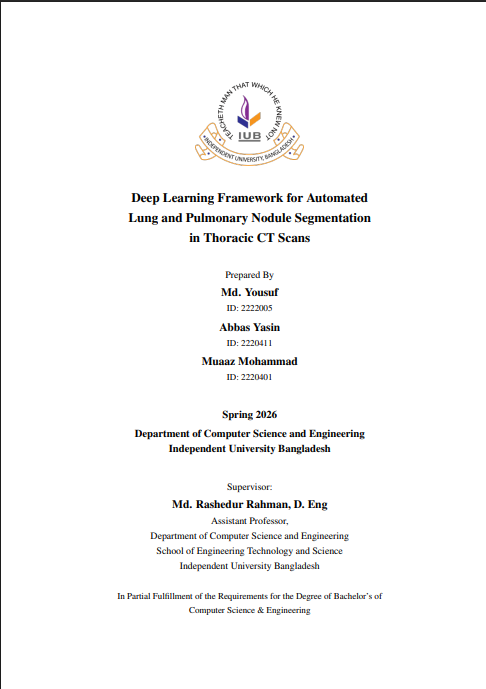

Undergraduate thesis
Deep Learning Framework for Automated Lung and Pulmonary Nodule Segmentation in Thoracic CT Scans
Bachelor’s thesis in Computer Science and Engineering at Independent University, Bangladesh. The work sits in deep learning, medical image analysis, computer vision, lung segmentation, pulmonary nodule identification, and automated medical image segmentation.

Authors
Prepared by Md. Yousuf, Abbas Yasin, and Muaaz Mohammad. Author names and order follow the thesis cover and the IUB institutional record.
IUB thesis record
The official repository record is held by Independent University, Bangladesh. The record lists the work as a thesis, publisher IUB, and date April 2026. The cover page names the term as Spring 2026. This is the thesis record, not a claim that the degree has already been conferred.
IUB thesis record IEEE Xplore document
Reported in the IUB abstract
These figures are quoted from the abstract on the IUB record. They are not copied onto the IEEE page, and this site does not add extra metrics.
- U-Net with a ResNet-18 backbone, trained with the LUNA16 dataset, Hounsfield unit windowing, data augmentation, and transfer learning.
- Reported Dice scores: left lung 0.996, right lung 0.973, pulmonary nodules 0.848.
- The abstract notes limited training data and 2D slice-based processing as limitations, and points to future 3D architectures, attention mechanisms, and larger multi-institutional datasets.

IEEE publication
A related IEEE Xplore document is listed under a close title: Deep Learning Framework for Automated Pulmonary Nodule Identification and Anatomical Segmentation in Thoracic CT Scans. The public IEEE record is the document at 11545645. This page does not invent a DOI, venue, IEEE author order, or citation count, and it does not treat the thesis and the IEEE document as the same file.
Described research workflow
- CT image preprocessing using a Hounsfield Unit window centered at −600 with a width of 1500.
- Resizing CT images to 224 × 224 grayscale, replicating the grayscale channel when a model required it.
- Multi-class segmentation of background, left lung, right lung, and pulmonary nodules.
- U-Net architecture with a ResNet-18 encoder.
- Development and training with PyTorch Lightning and GPU computing.
- Dice loss for segmentation optimization.
- Adam optimizer with a cosine learning-rate schedule.
- Evaluation using Dice coefficient, Intersection over Union, precision, and recall.
- Use of the LUNA16 and LIDC-IDRI datasets.
Previously described experimental configuration
These training-setup details describe a configuration I supplied earlier. They are not taken from the IUB abstract.
- Data split: patient-level 10% training, 10% validation, and 80% testing.
- Training duration: 120 epochs.
- Batch size: 16.
- GPU: NVIDIA RTX 4060 Ti, as previously described.
- Initial learning rate: 2 × 10⁻⁴. Minimum learning rate: 1 × 10⁻⁵.